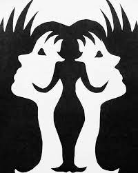

Imagem Ambígua

Conceitos:
-
lei 5Fechamento e UnificaçãoNós vemos só contornos das imagens de rostos de mulheres, mas fechamos as formas para que seja um rosto inteiro.
-
lei 6Figura/FundoEsse é o mais aparente. O uso simples de preto e branco faz com que o espaço negativo pareça dois rostos.
-
lei 8SimetriaSe você pegar o centro dessa imagem pelo eixo x, as duas metades serão iguais. Também se inverter a imagem no eixo x.
Design de Bicicleta

Conceitos:
-
lei 2ProximidadeOs conjuntos de círculos nós juntamos, e fazemos o mesmo com os elementos mais agudos.
-
lei 4PregnânciaA imagem é feita de diversos objetos pequenos, mas os simplificamos para que seja uma bicicleta (feita de poucas formas).
-
lei 5Fechamento e UnificaçãoNosso cérebro pensa que cada forma é completa, mas na verdade é composta de partes incompletas.
-
lei 7Região ComumAgrupamos cada parte da imagem que é de uma cor como sendo um elemento, e só depois vemos que são separadas.
Gráfico Comum

Conceitos:
-
lei 1SemelhançaNós lemos o gráfico no sentido em que os elementos de mesma cor estão (indo para a direita e para cima).
-
lei 2ProximidadeJuntamos as colunas para formar um triângulo, pois são objetos similares.
-
lei 3ContinuidadeComo cada coluna vai crescendo em tamanho, vamos seguindo esse crescimento.
-
lei 4PregnânciaCada coluna é forma por múltiplos retângulos, mas os simplificamos para formar um só.
-
lei 7Região ComumJuntamos as colunas por cor, e por terem formas e tamanhos semelhantes.